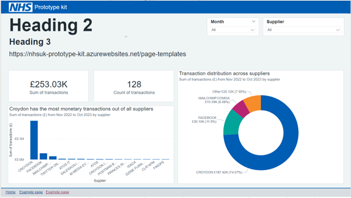
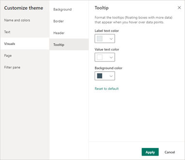
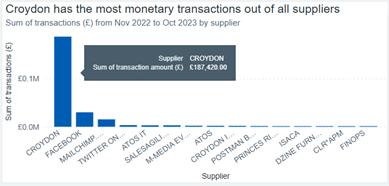
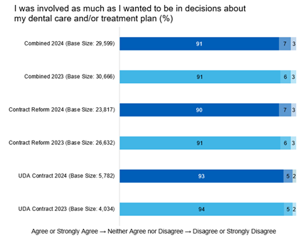
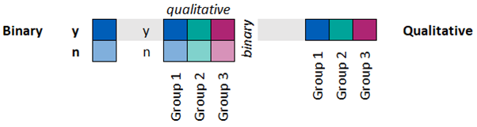
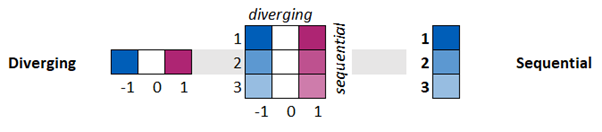
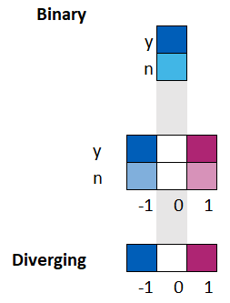
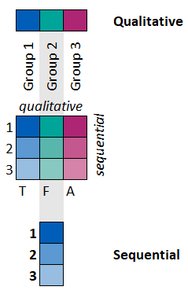

Primary Colours
Our brand colours help people recognise and trust that our services come from the NHS.
We follow the NHS digital services manual guidelines for colours and how to apply them.
Background
We use NHS Grey 5 as a background tint. This is because:
- it reduces the overall page glare
- the British Dyslexia Association’s style guide recommends dark text on a light, but not white, background
- it allows different components to stand out
#F0F4F5 is the hex code for NHS Grey 5 (light greyish cyan):
We use NHS White to make important information stand out and for contrasting backgrounds, for example on the NHS website home page.
#FFFFFF is the hex code for NHS White:
Border
Each visualisation and filter should have a border of NHS Grey 4 (hex code: #D8DDE0).

Tooltips
In each tooltip, the colour of the:
- label text should be NHS Pale Grey (hex code: #E8EDEE)
- value text should be NHS White (hex code: #FFFFFF)
- background should be NHS Dark Grey (hex code: #425563)


Single variables
On webpages with a single variable, we use NHS Blue (hex code: #005EB8).
Two variables
On webpages with 2 variables, it’s recommended we use NHS Light Blue alongside NHS Blue.
#005EB8 is the hex code for NHS Blue (strong blue):
#41B6E6 is the hex code for NHS Light Blue (bright blue):
Related variables
On webpages with related variables, such as comparing adults and children across 2 groupings, it’s recommended we use a 50% tint.
If the tints do not pass contrast ratio checks, you should add a border to enhance the colour further. You should only do this if it’s a suitable visualisation – for example, this could be done for a bar graph but should not be done for a line graph.
This means we’ll use 2 different tints of one consistent colour for each grouping.
Choosing a tint
If you need to use a palette which only has a small number of tints, we recommend using 50%. You can also use 25%.
To increase the palette, we recommend you use tints of 80%, 60%, 40% or 20%.
Any percentage value is acceptable if it is:
- visible
- clear
- accessible
Note: we only recommend outlining the bars when using the lightest tints of a palette, if there is not enough colour contrast. In this case, we would outline all bars to maintain consistency. In general, bar outlines add unnecessary clutter.
You can use the HTML CCS Color website to find tints. The following hex codes are for the tints of NHS Blue at each 10% interval: to find tints. The following hex codes are for the tints of NHS Blue at each 10% interval:
![visual representation of the tints of NHS Blue listed on this page. The list of hex codes and the percentage tint they represent appears in the same order as lsited on the page, and to the left of each hex code is a small rectangle block of colour orientated horizontally, each in the colour that corresponds to the hex code it is next to. From top to bottom the colours shown are: #005EB8 (NHS Blue) - 100%, #337EC6 - 90%, #5C98D1 - 80%, #7DADDA - 70%, #97BDE1 - 60%, #ACCAE7 - 50%, #BDD5EC - 40%, #CADDF0 - 30%, #D5E4F3 - 20%, #DDE9F5 - 10%, #FFFFFF (White) - 0%](../images/gradient_crop.png)
#337EC6 - 90%
#5C98D1 - 80%
#7DADDA - 70%
#97BDE1 - 60%
#ACCAE7 - 50%
#BDD5EC - 40%
#CADDF0 - 30%
#D5E4F3 - 20%
#DDE9F5 - 10%
#FFFFFF (White) - 0%
Designing charts with 2 separate categories
If you’re using a chart that displays data for 2 separate categories, you should show these using:
- NHS Blue (hex code: #005EB8)
- NHS Light Blue (hex code: #41B6E6)
For other details, you can use 100% tint, 80% tint and 60% tint of these colours.
You should start at 100% and move down through the lower percentage intervals as needed. The tints you use should have appropriate contrast for their numeric labels.
Hex codes for NHS Blue tints:
- 100%: #005EB8
- 80%: #5C98D1
- 60%: #97BDE1
Hex codes for NHS Light Blue tints:
- 100%: #41B6E6
- 80% #66C4EB
- 60% #8DD3F0

You can find more information about palettes and tints on the:
- NHS guidelines on using colour to support brand identity
- GOV.UK Design System Colour page
- Civil Service Sequential data colour palette page
Representing different groups of data
You should use different colours to represent different groups.
For example, you might choose to use NHS Blue (hex code: #005EB8), NHS Aqua Green (hex code: #00A499), and NHS Pink (hex code: #AE2573).
If the data is:
- binary, you should use 100% and 50% tints of the same colour

- diverging, you should use 2 different colours and white (hex code: #FFFFFF)


- sequential, you should represent this using tints of a colour starting with 100% and moving down through the lower percentage intervals towards 0%- for example to 80% then 60%

You can find out more information in the NHS Colour use guide and NHS digital service manual.
Improve the playbook
If you spot anything factually incorrect with this page or have ideas for improvement, please share your suggestions.
Before you start, you will need a GitHub account. Github is an open forum where we collect feedback.
Published:
Last reviewed:
Next review due: